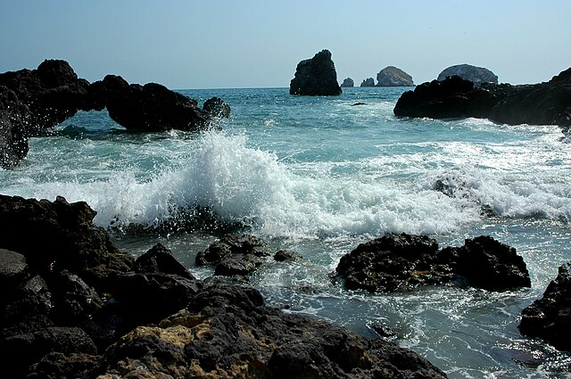

Follow these 7 principles to be a good steward of outdoor spaces!
Plan Ahead & Prepare
- Read up about where you're going before you visit
- Check weather forecasts & trail conditions
- Make sure you're carrying all the essentials
- On long hikes, set a time to turn around

Travel & Camp on Durable Surfaces
- Stay on designated trails
- Keep all camping gear within a site's established footprint
- Camp only in designated campsites
Dispose of Waste Properly
- Pack out all food & trash, including biodegradable litter
- Use outhouses & bathrooms at trailheads
- When nature calls on trail — hike 200 paces away from trails & water sources. Bury solid human waste
Leave What You Find As You Found It
- Do not remove plants, antlers, or rocks from the natural environment
- Clean your gear between visits to wild areas to avoid introducing invasive species
- Do not carve into trees or graffiti rocks
Minimize Campfire Impacts
- Buy where you burn! Don't introduce invasive insects by transporting firewood
- Don't peel bark or cut living or dead standing trees; use only wood that's already dead and on the ground for your fires
- Never leave a campfire unattended
Respect Wildlife
- Store all food and scented items away when not in use
- Do not feed wildlife, as it reduces their self-reliance and can make them more aggressive
- Observe wild animals quietly and from a distance

Be Considerate of Others
- Hike quietly and share summits and trails so that others can enjoy them
- Leave natural areas and campsites in the same condition that you would want to find them